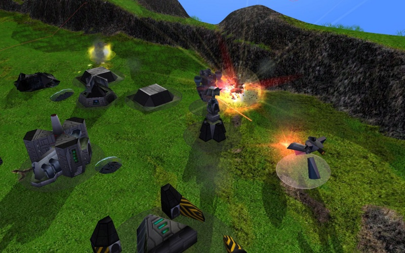
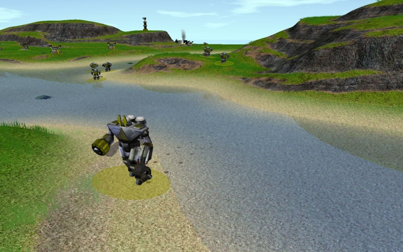
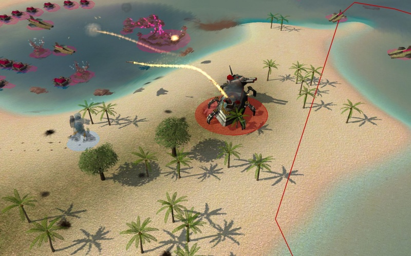

XTA

What is XTA?
XTA is one of the original games for Spring, and the one many players feel is "more OTA than OTA itself" due to the authentic feel combined with the Spring Engine's capabilities.
XTA tests a player's tactical, teamwork and micro abilities whilst fostering diverse playing styles and giving many ways in which one action can change the outcome of battle.
But the best review for any player is to experience it for themselves.
Download
The easiest way to download latest XTA is via the the automatic download system of your favorite multiplayer lobby.
Gameplay
Here are just some of the many good aspects XTA has to offer.
- Perhaps XTA's greatest strength is that players must keep the balance of keeping their own units alive through repairing and avoiding projectiles, while still doing maximum damage to the enemy. Amongst this they also have to keep their economy on track and try guess their opponent's next move. Sound easy? Give it to a go!
- XTA is more micro than macro, although the latter is a vital feature. Units have more health than other games enabling players to keep units alive. Spamming is done less as units are more expensive and too many units means you will lose your units to the a few well microed enemies. It's not how many you build but how you use them.
- At the advanced levels of the tech tree, both factions really come into their own. Whereas Core may get the power of flame, Arm get the power of lightning, offering the quick and light to the strong and slow. Will you go for brute force and economical superiority or hit and run stealth tactics?
- XTA prides itself on being a mod of team play allowing teams to play strategically and work together to achieve goals as a simple macro victory is rare. The small community makes players able to have a greater understanding of each other giving the game a more rewarding victory.
- One of XTA's best selling points is the Commander. The versatility of this unit allows it to be used for aggressive, tactical, defensive and economical purposes as well as having the ability to Morph to be stronger.
- Very much similar to Spring itself, XTA has a friendly community and although it being relatively small, balance discussions are often held within the group. However, this also allows all players to know each other making games more between friends than foes. It also has one of the most active clan systems.
- XTA has a tough learning curve, however an intelligent player will quickly learn when to build and what, may it be lab or unit. This makes XTA a mod constantly keeping the player entertained and challenged. With different tactics being discovered all the time users have many ideas to choose from of how to start their game. XTA is renowned for players making comebacks by rebuilding their base.
So where can I find out more?
XTA is proud to be a community-run development program.
The XTA community and subforum is always willing to listen to suggestions. From there you will be able to read on the latest plans of XTA here, read the change log, and contribute your own ideas on the mod itself.
Something not to your liking about the current XTA? Talk about, maybe have it changed! Many balance issues are discussed from the introduction of new units to the changing of a single unit's DP
You can join the #xta channel to find other XTA players and see if anyone wishes for a game. There is nearly always a game of the most uptodate XTA being hosted.
Newer versions will continue to be released to incorporate more detailed visual effects/or models as the Spring Engine develops.
If you wish to learn the basics of XTA, you can read guides such as:
History
XTA was a balance mod for TA, developed by the SY clan.
For Spring, it was the first mod available to the public for online play, the first that was ported and for a long time came bundled with the installation of the Spring engine, ready to play.
The mod has gone through many developers, starting with the SY clan with the most ancient and famous to the oldest of players, SJ; and then moving onto other users.
One of the most notable players has been Noize, a founder of BA. Noize started XTA's modern look, with updated graphics and flash explosions (XTA Pimped Edition), which would later be seen as unnecessary and extremely laggy.
A short time afterwards the [KnoX] clan, the leading XTA clan ran by Myg and Gizmo starting to develop the mod. For a brief time a major debate became visible that XTA was KnoX's mod now, this would be shortly dismissed.
After [KnoX] disbanded due to them feeling the time was right for the members to go their separate ways, they still maintained XTA until Noruas began upkeep of the mod. With XTA 7.1 being seen as a watershed moment due to the peak of XTA's player base due to the decline of AA and rise of BA, so too can XTA 8.1. With some debate to whether the current XTA is the best, the two main contenders would be 7.1 and 8.1. With 8.1 came updated graphics and what many players remember as "The golden days" whereas 7.1 can be called the heyday of XTA itself.
Noruas has introduced more units than any other developer of XTA, improved graphics and dragged XTA through the new Spring versions. With the community split about where they stand on many of his somewhat radical ideas, Noruas has certainly added to XTA.
Noruas maintained XTA for some time. Players contribute and offer help on a multitude of scales. The current XTA balance offers something new and dynamic whilst still maintaining the roots of OTA and the older XTA versions giving a blend of classic and modern.
Recently Deadnight Warrior has taken over development, fixing bugs, optimizing scripts and tweaking balance. A git repository with bugtracker was also set up.
Eye Candy
XTA is arguably the best-looking mod in terms of graphics. With new unit models and new explosion/smoke effects being released with every update, the XTA mod keeps up to date with the Spring Engine and what it has to offer.
Here are some pictures of what XTA has to offer:
  
{kind=link}
{kind=link}
{kind=link}
Important Autohost Commands
Official XTA autohosts are:
[semprini]Autohost - for all [loganberry]Autohost - for beginners [durian]Autohost - for fleabowl [elderberry]Autohost - for testing new xta versions
Of course you can also use either of these hosts for other purposes.
Managing the autohosts
To start up one of these hosts, if it is not running but another host is running, you can use the command:
!spawn <autohost> - where <autohost> is one of semprini, logan, elder or durian.
In elderberry autohost you can also set another spring engine with the command:
!setengine <engine name or latest> - for example !setengine 104.0 to set engine to Spring 104.0
To get a long, complete list type of commands: !help
Below are some often used commands for quicker looking:
Maps
Pick a random "good" map: !map
Download a map: !dlmap <mapname or url> After this wait 30 seconds or issue the command !reloadarchives
Mapslists
Maplists act like filters: when you (for example) set the !maplist 1v1 command, all subsequent listing of maps will be only from the 1v1 map list. So this will allow you to only use a subset of all maps. There are now these defined maplists, but more can be requested:
!maplist 1v1 | 2v2 | 3v3 | 4v4 | 5v5 | 6v6 | teams | bigteams | 3ffa | 4ffa | 5ffa | fleas | good
To return to all maps, use this command:
!maplist all
Show list of maplists: !printmaplist
Show list of maps in a specific list: !printmaplist <listname>, for example !printmaplist 1v1
Add current map to a list: !addmap <listname>, for example !addmap 1v1
King of the Hill
Add an one more startbox than they are teams.
!koth 1 - enable King of the Hill mode.
!koth 0 - disable King of the Hill mode.
!hilltime X - team has to control hill for X minutes to win.
!gracetime Z - at game start hill stays neutral for Z minutes.
Game options
!mode killall - destroy all enemy units to win
!mode comends - destroy enemy Commanders to win
!spidertortoise 0 - Turn spiders & turtle units off.